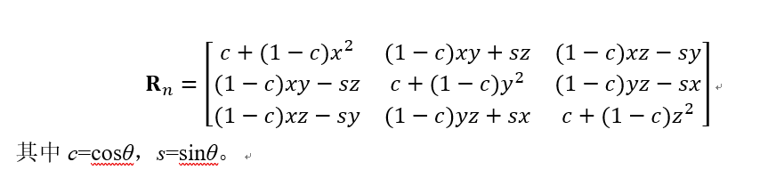
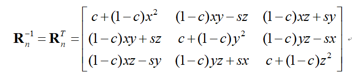
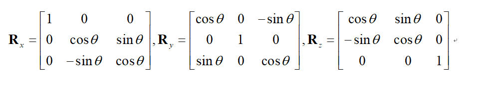
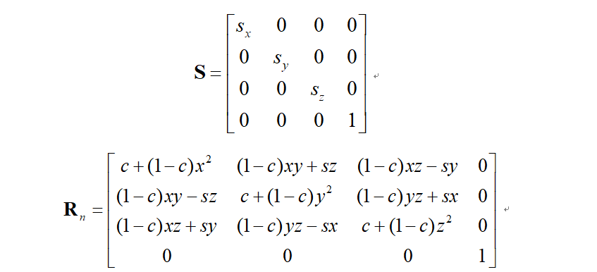
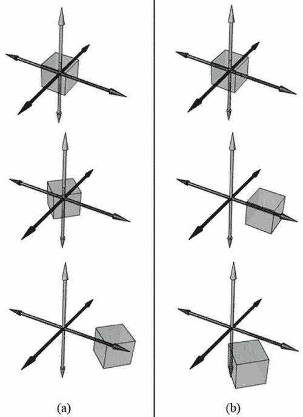
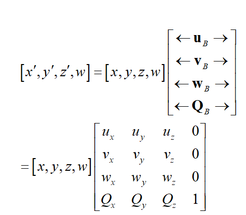

Transform
线性变换
定义
- 满足以下性质为线性变换
1.$\tau(u+v) = \tau(u) + \tau(v)$
2.$\tau(ku) = k\tau(u)$
其中u,v为任意三维向量，k为标量
矩阵表示
- 设向量 $\vec{u} = (x,y,z)$
$\vec{u} = (x,y,z) = x \vec{i} +y \vec{j} + z \vec{k}$$\vec{i}$,$\vec{j}$,$\vec{k}$称为${ℝ}^{3}$的标准基向量（standard basis vectors）（${ℝ}^{3}$表示所有3D坐标向量$(x,y,z)$的集合）
$\vec{u} = x(1,0,0)+y(0,1,0)+z(0,0,1) =$
$
\begin{bmatrix}
x & y & z
\end{bmatrix}
\begin{bmatrix}
1 & 0 & 0 \
0 & 1 & 0 \
0 & 0 & 1
\end{bmatrix}
$
- 设一线性变换$\tau(u)$
$\tau(u) = \tau(x\vec{i}+y\vec{j}+z\vec{k}) = x\tau(\vec{i})+y\tau(\vec{j})+z\tau(\vec{k})$
$\tau(u) = \vec{u}A =$
$
\begin{bmatrix}
x & y & z
\end{bmatrix}
\begin{bmatrix}
1 & 0 & 0 \
0 & 1 & 0 \
0 & 0 & 1
\end{bmatrix}
\begin{bmatrix}
\leftarrow & \tau(\vec{i}) & \rightarrow \
\leftarrow & \tau(\vec{j}) & \rightarrow \
\leftarrow & \tau(\vec{k}) & \rightarrow \
\end{bmatrix} =
$
$
\begin{bmatrix}
x & y & z
\end{bmatrix}
\begin{bmatrix}
A_{11} & A_{12} & A_{13} \
A_{21} & A_{22} & A_{23} \
A_{31} & A_{32} & A_{33} \
\end{bmatrix}
$
由上面推导，我们把A称为线性变换$\tau$的矩阵描述
- S是线性的 $\leftrightarrow$ S存在一个矩阵描述
缩放变换
- 缩放变换是一个线性变换
$ S(x,y,z) = (S_{x}x,S_{y}y,S_{z}z) =
\begin{bmatrix}
x & y & z \
\end{bmatrix}
\begin{bmatrix}
S_{x} & 0 & 0 \
0 & S_{y} & 0 \
0 & 0 & S_{z} \
\end{bmatrix}
$ - 缩放变换矩阵为
$
\begin{bmatrix}
S_{x} & 0 & 0 \
0 & S_{y} & 0 \
0 & 0 & S_{z} \
\end{bmatrix}
$ - 缩放变换逆矩阵为
$
\begin{bmatrix}
\frac{1}{S_{x}} & 0 & 0 \
0 & \frac{1}{S_{y}} & 0 \
0 & 0 & \frac{1}{S_{z}} \
\end{bmatrix}
$
旋转变换
- 推导有点复杂，暂时略。
- 旋转矩阵
 - 旋转矩阵是个正交矩阵，所以转置和逆相同
 - 我们常用绕X,Y,Z旋转

仿射变换
齐次坐标
- 用(x,y,z,0)表示向量，这样在平移过程中不会改变坐标
- 用(x,y,z,1)表示点
这样两点相减位向量，点加向量为点。符合定义
仿射变换
- 定义: 线性变换 + 平移
$a(u) = \tau(u) + b$ - 矩阵表示为:
$a(u) = uA + b =$
$
\begin{bmatrix}
x & y & z\
\end{bmatrix}
\begin{bmatrix}
A_{11} & A_{12} & A_{13} \
A_{21} & A_{22} & A_{23} \
A_{31} & A_{32} & A_{33} \
\end{bmatrix} +
$
$
\begin{bmatrix}
b_{x} & b_{y} & b_{z}
\end{bmatrix} =
$
$
\begin{bmatrix}
x’ & y’ & z’\
\end{bmatrix}
$ - 也可以用齐次坐标的形式:
$a(u) =$
$
\begin{bmatrix}
x & y & z & 1
\end{bmatrix}
\begin{bmatrix}
A_{11} & A_{12} & A_{13} & 0\
A_{21} & A_{22} & A_{23} & 0\
A_{31} & A_{32} & A_{33} & 0\
b_{x} & b_{y} & b_{z} & 1\
\end{bmatrix} =
\begin{bmatrix}
b_{x} & b_{y} & b_{z} & 1
\end{bmatrix}
$上述 4*4 矩阵为仿射变换矩阵
平移变换
$ \tau{u} = uI + b $
I为单位矩阵
- 平移变换仿射变换矩阵
$
\begin{bmatrix}
1 & 0 & 0 & 0 \
0 & 1 & 0 & 0 \
0 & 0 & 1 & 0 \
b_{x} & b_{y} & b_{z} & 1 \
\end{bmatrix}
$- 其逆矩阵为
$
\begin{bmatrix}
1 & 0 & 0 & 0 \
0 & 1 & 0 & 0 \
0 & 0 & 1 & 0 \
-b_{x} & -b_{y} & -b_{z} & 1 \
\end{bmatrix}
$
缩放和旋转的仿射矩阵

仿射变换矩阵的几何解释
- 放射变换其实是对基向量的变换。这样同样的线性组合在不同的基向量下表达不一样。达到了变换的作用
组合变换
- 先旋转后平移 和 先平移后旋转是不同的。因为所有变换都是相对于原点进行的。

(a)先旋转再平移。(b)先平移再旋转。
坐标转换变换
向量

$P_{A} = |x| \vec{x} + |y| \vec{y}$
$P_{B} = |x| \vec{u} + |y| \vec{v}$
- 其中$\vec{u},\vec{v}$方向与FrameA中基底相同，然后可以知道$\vec{P}$的表示了
- $P_{B}=x\vec{u_{B}}+y\vec{v_{B}}+z\vec{w_{B}}$
其中u、v、w是单位向量，它们所指向的方向分别与参考系A的x轴、y轴、z轴方向相同。
点
- 因为点具有位置信息
- $P_{B}=x\vec{u_{B}}+y\vec{v_{B}}+z\vec{w_{B}}+Q_{B}$
其中u、v、w是单位向量，它们所指的方向分别与参考系A的x轴、y轴、z轴方向相同，Q是参考系A的原点。
矩阵表示

- 其中$Q_{B}=(Q_{x},Q_{y},Q_{z},1)、u_{B}= (u_{x},u_{y},u_{z},0)、v_{B}=(vx,vy,vz,0)、w_{B}=(w_{x},w_{y},w_{z},0)$均为齐次坐标，它们描述了参考系A相对于参考系B的原点位置和坐标轴方向。我们将方程3.9中的4×4矩阵称为坐标转换矩阵或参考系转换矩阵，它可以将参考系A的坐标转换（或映射）为参考系B的坐标。
总结
文章标题:Transform
本文作者:Sanctorum003
发布时间:2019-09-09, 15:48:13
最后更新:2019-09-09, 15:48:31
原始链接:https://sanctorum.github.io/2019/09/09/Transform/版权声明: "署名-非商用-相同方式共享 4.0" 转载请保留原文链接及作者。